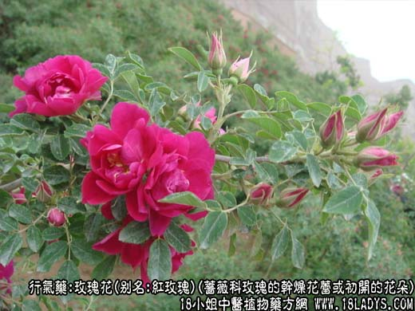
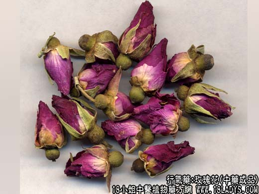
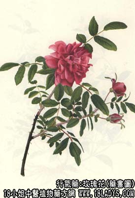

玫瑰花为少常用中药，始载《纲目拾遗》。
别名：红玫瑰。
来源：为蔷薇科植物落叶小灌木玫瑰的干燥花蕾或初开的花朵，多为栽培。
产地：主产于江苏、浙江以及山东、安徽等省，其它各省多有栽培。
性状鉴别：花蕾呈不规则的圆球形，直径1~1.5厘米，花朵半球形，直径1.5~2.5厘米。花瓣多数，膜质，层迭而生，紫红色，脱色部位棕黄色，基部宿萼绿褐色，花托球形，萼片五裂披针形。剥落花瓣，中有雄蕊多数。气香浓，味微苦涩。
以花蕾、花朵大而完整，色紫红鲜艳，香气浓郁者为佳。
主要成分：含挥发油，其中主要为牻牛耳醇。花瓣含有蜡质、二十九（碳）烷，以及鞣质等。
功效与作用：舒肝镇痛，收敛止泻。
炮制：生用。
性味：微甘、苦、温。
归经：入肝、脾经。
功能：理气行血，解郁调经。
主治：肝胃气痛，乳痈肿毒，月经不调，肠炎下痢。
临床应用：1、治肝郁胁痛、胃脘痛。不论胃神经官能症或慢性胃炎、慢性肝炎，凡有胃部或胁部闷痛、发胀，都可用玫瑰花，配香附、川楝子等，方入玫瑰解郁汤。对兼有泄泻者亦可用玫瑰花。
用量：4.5~9g或3~6朵。